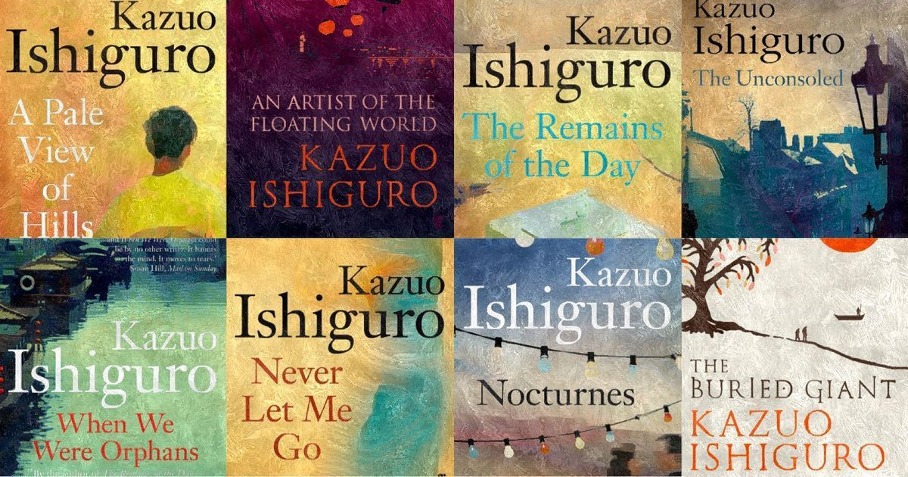

Writer of the Week
Kazuo Ishiguro, in full Sir Kazuo Ishiguro, (born November 8, 1954, Nagasaki, Japan), Japanese-born British novelist known for his lyrical tales of regret fused with subtle optimism. In 2017 he won the Nobel Prize for Literature for his works that “uncovered the abyss beneath our illusory sense of connection with the world.”
Klara and the Sun: A novel (2021)
The novel is set in a dystopian future in which some children are genetically engineered ("lifted") for enhanced academic ability. As schooling is provided entirely at home by on-screen tutors, opportunities for socialization are limited and parents who can afford it often buy their children androids as companions. The book is narrated by one such Artificial Friend (AF) called Klara. Although Klara is exceptionally intelligent and observant, her knowledge of the world is limited.

More about Ishiguro's works
Some of Ishiguro's novels are set in the past. Never Let Me Go has science fiction qualities and a futuristic tone; however, it is set in the 1980s and 1990s, and takes place in a parallel world very similar to ours. His fourth novel, The Unconsoled, takes place in an unnamed Central European city. The Remains of the Day is set in the large country house of an English lord in the period surrounding World War II.
Read more...